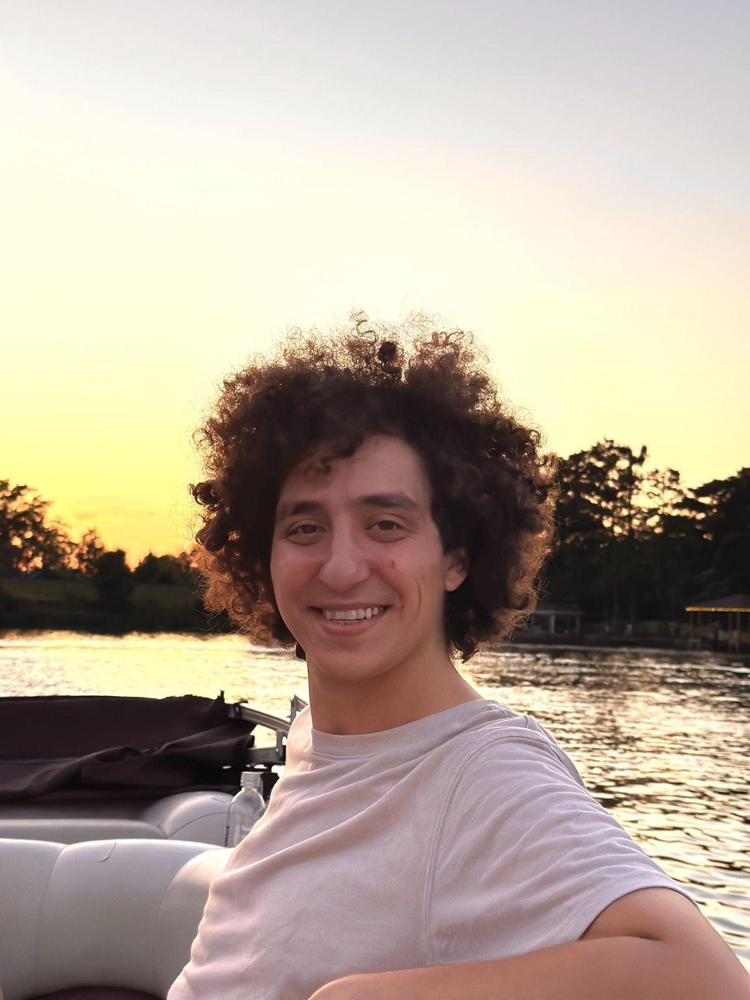

MOLECULAR DISKS
Cosmic rays through the lens of H₂
Using molecular hydrogen emission to investigate nonthermal excitation and ionization in planet-forming disks.
Explore the science ↗JWST · STAR & PLANET FORMATION
I study the gas, dust, and energetic processes that shape young stars and the disks where planets form.

ABOUT ME
I’m a postdoctoral researcher at the University of Bern, working with Maria Drozdovskaya.
My research connects star and planet formation with astrochemistry. I use infrared spectroscopy from JWST, alongside observations from ALMA and physical modeling, to investigate molecular gas, protostellar outflows, and the material that feeds planet formation.
I completed my PhD at the University of Virginia with Zhi-Yun Li. Teaching and mentorship are also central to my work. Outside astronomy, I enjoy making music, gardening, and spending time with my family.
Get in touch ↗A CLOSER LOOK
MOLECULAR DISKS
Using molecular hydrogen emission to investigate nonthermal excitation and ionization in planet-forming disks.
Explore the science ↗
DUST & EXTINCTION
Embedded jets provide a way to measure how dust attenuates infrared light in the material surrounding young stars.
Explore the science ↗
JETS & OUTFLOWS
Spatially resolved JWST spectroscopy reveals the asymmetric atomic jet and molecular outflow of TMC1A.
Explore the science ↗LET’S CONNECT